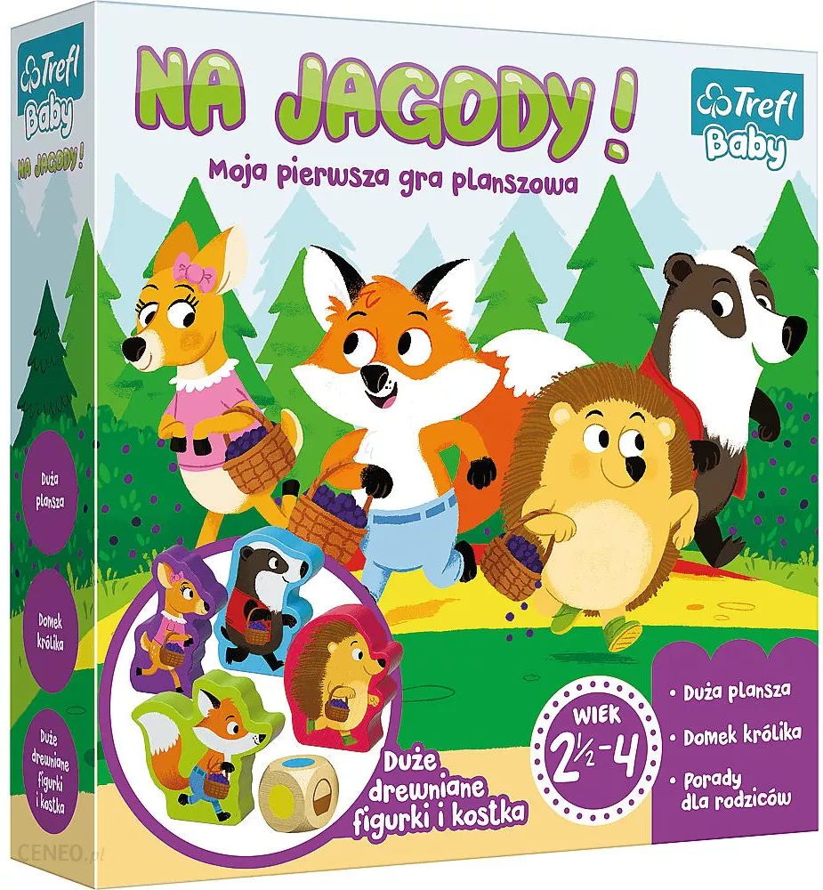
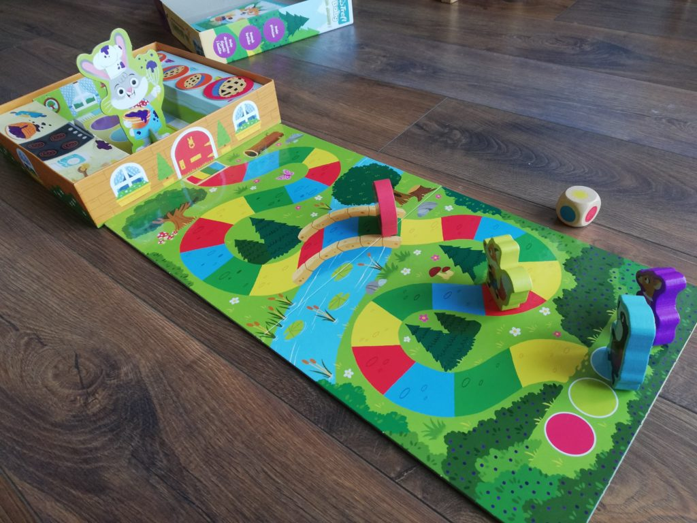
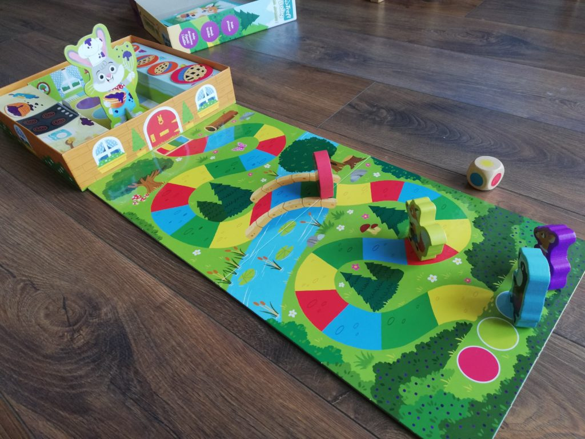
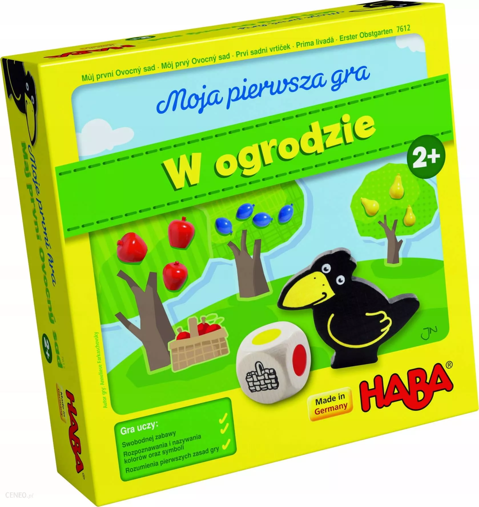
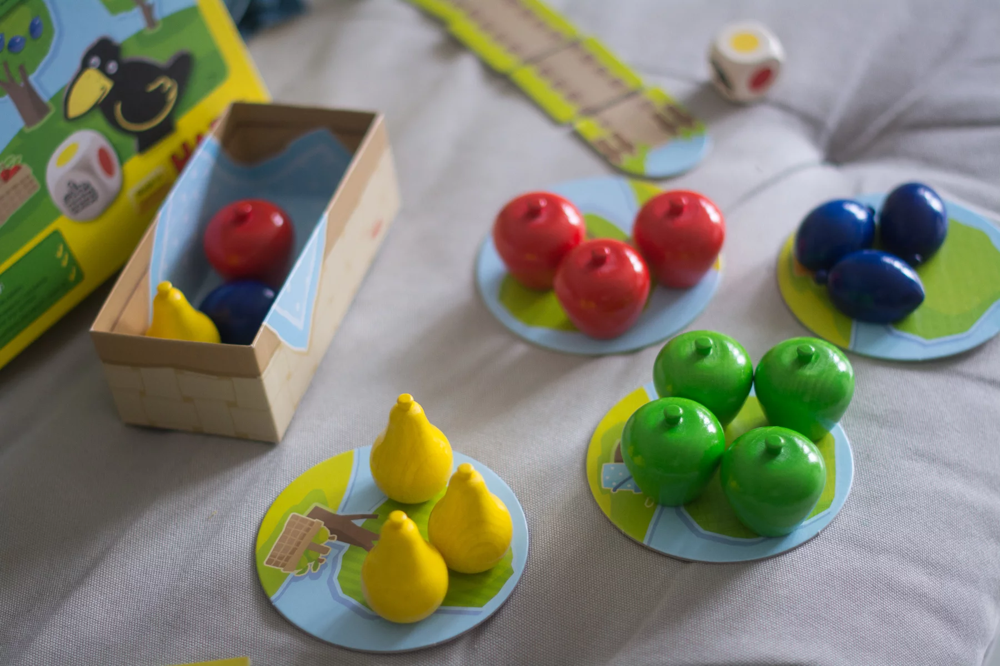
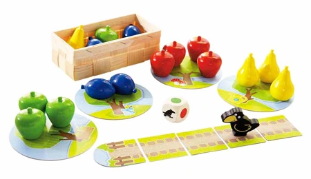
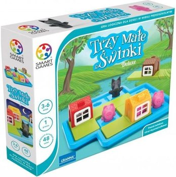
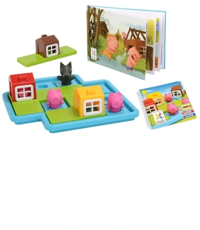
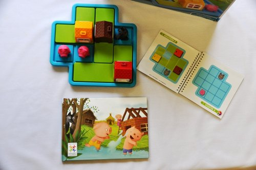

NA JAGODY
 

Liczba graczy: 2-4 osób
Wiek: 2+
Czas gry: 15 minut
Wydawca: Trefl
Na jagody! to pierwsza gra planszowa dla maluchów, ich przyjaciół oraz rodziców.
Mieszkańcy lasu wrócili właśnie z jagodobrania. Ten, który jako pierwszy dotrze do chatki królika z koszykiem pełnym jagód - zwycięża. W nagrodę, na zwycięzcę czeka świeżo upieczone ciasto jagodowe, zaś pozostali uczestnicy gry otrzymują pyszne nagrody pocieszenia!
W OGRODZIE
  Liczba graczy: 1-4 osób
Wiek: 2+
Czas gry: 15 minut
Wydawca: HABA
W pięknym sadzie rosną czerwone i zielone jabłka, soczyste żółte gruszki i dojrzałe niebieskie śliwki.Czy graczom uda się wspólnie zebrać owoce zanim zje je łapczywy ptak? Muszą przed nim zdążyć.Rzuty kostką z kolorowymi figurkami wyznaczają kolejność graczy. Jest to uproszczona wersja klasycznej kooperacyjnej gry HABA "W ogrodzie", lecz przygotowana z myślą o najmłodszych.Zasady są dostosowane do ich wieku, a wszystkie rekwizyty gry zostały specjalnie zaprojektowane do rąk małych dzieci. Piękne wykonane i bardzo poręczne drewniane elementy są również bezpieczne, pokryte farbą na bazie wody.Gra bawi i wciąga nawet najmłodsze dzieci. Jest też okazją do nauki kolorów, kształtów i liczenia, wspomaga rozwój zdolności motorycznych maluszków.Doskonale sprawdza się też do swobodnej zabawy w pojedynkę.
TRZY MAŁE ŚWINKI DELUXE
  Liczba graczy: dowolna
Wiek: 4+
Czas gry: dowolny
Wydawca: SMART GAMES
Dawno, dawno temu były sobie trzy świnki... Każda zbudowała swój domek. Pierwsza wykonała go ze słomy, druga - z drewna, a trzecia z cegły.
Gdy w okolicy pojawił się wilk, świnki były bezpieczne, bo mogły się szybko przed nim schować. Pomóż świnkom ukryć się przed wilkiem!
Instrukcja gry:
Gra TRZY MAŁE ŚWINKI ma dwa warianty.
W każdym znajdują się 24 zadania.
Jeśli chcesz, przenieść się do bajkowej krainy:
Trzy Małe Świnki zapraszają Cię do zabawy!
Czy potrafisz ustawić świnki na planszy w taki sposób, aby mogły bawić się na podwórku?
Jeśli pojawi się wilk - czy pomożesz świnkom bezpiecznie ukryć się w domkach?